① 段数表
「丸太換算」は 2^段数 個の丸太に相当する想定（アプリ本体の計算と同じロジック）。* 付きは進行バーの縁がまだ残っている未クリーンアップのアイコンです。
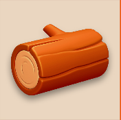
1 log（丸太）
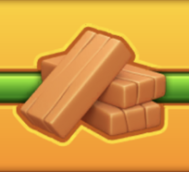
2 plank（板）
3 woodshield（丸盾・木）*
4 gemshield（宝石盾）*
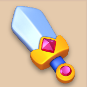
5 sword-single（剣・単体）
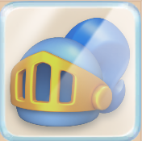
6 helmet（兜）
7 shield（盾・王冠柄）
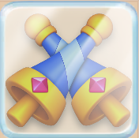
8 sword（剣×2合体）
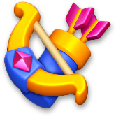
9 bow（弓矢）*
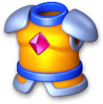
10 armor（鎧）
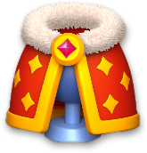
11 cape（マント）
12 crown（王冠）*
⚠️ 確認できているのは同じ進行バー内の相対順序まで。素材ライン（log→plank→woodshield→gemshield）と装備ライン（sword→bow→armor→cape）を丸太換算で横並び比較できる証拠はまだ無いので、5番以降の丸太換算は見た目の複雑さからの推測です。
② アイコン一覧（生サイズ）
画像1枚に焼き込まず、各アイコンファイルをそのまま(拡大縮小なし)並べたもの。サイズが違う理由が一目で分かるように寸法も出しています。
icon-log.png
176×175
176×175
icon-plank.png
390×356
390×356
icon-woodshield.png*
113×140
113×140
icon-gemshield.png*
94×140
94×140
icon-sword-single.png
176×175
176×175
icon-helmet.png
176×175
176×175
icon-shield.png
176×175
176×175
icon-sword.png
176×175
176×175
icon-bow.png*
122×140
122×140
icon-armor.png
176×175
176×175
icon-cape.png
176×175
176×175
icon-crown.png*
140×104
140×104
③ 参考スクリーンショット（元ネタ）
アイコンの切り抜き元になった実機スクショ。クリックで原寸表示。
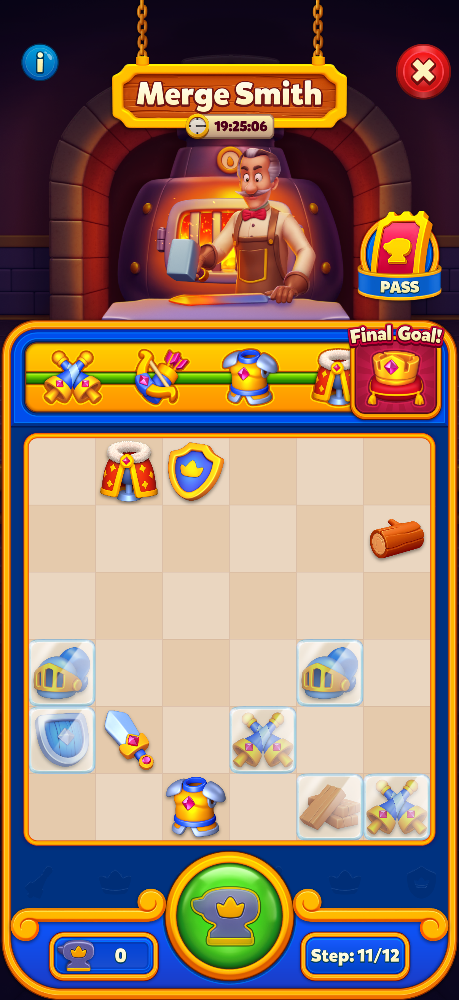
board-1（装備ライン: sword→bow→armor→cape）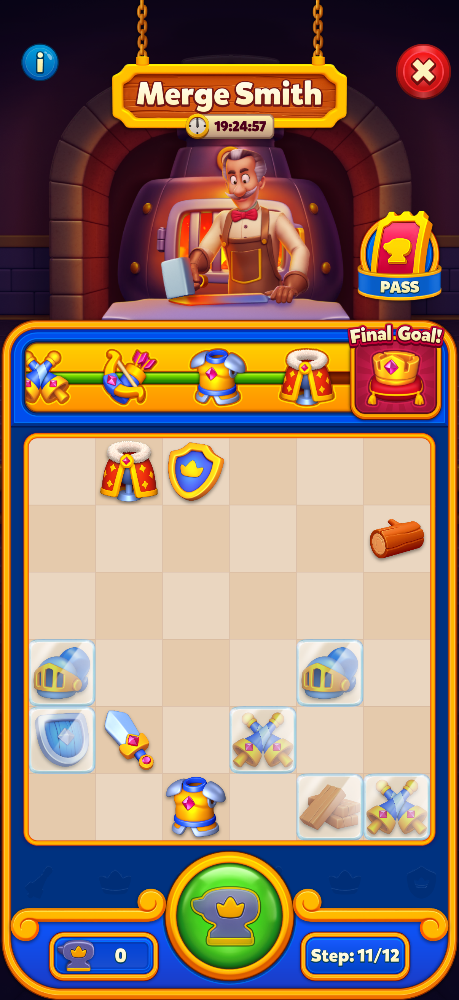
board-2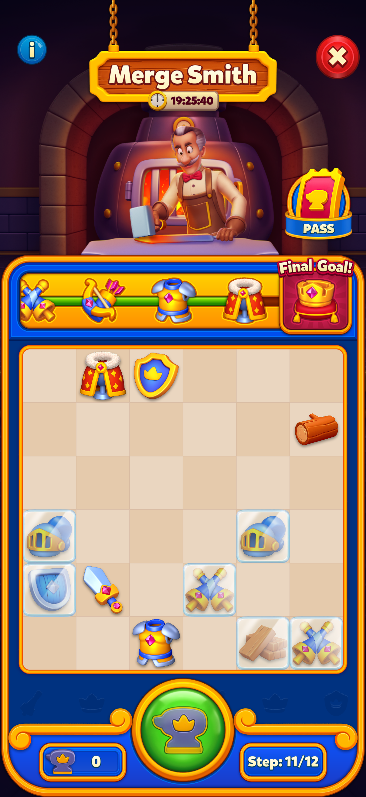
board-3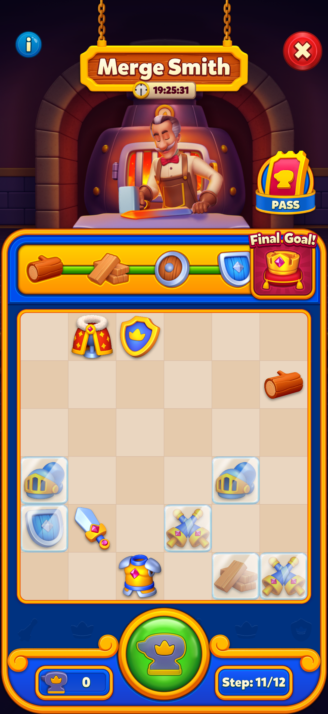
board-4（素材ライン: log→plank→woodshield→gemshield）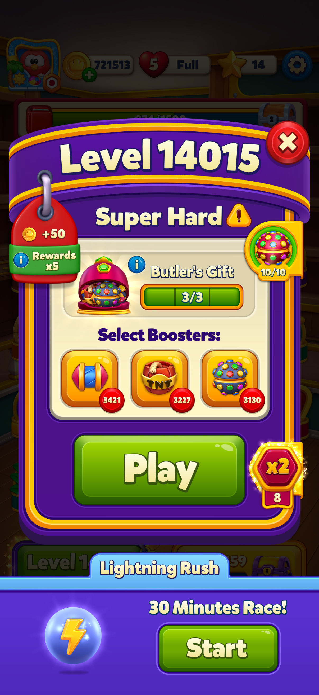
level14015（一の位5・報酬x5）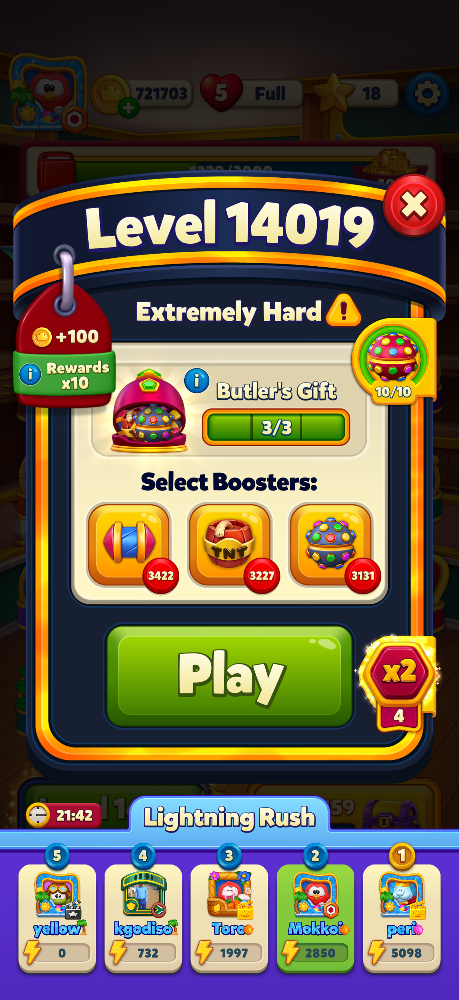
level14019（一の位9・報酬x10）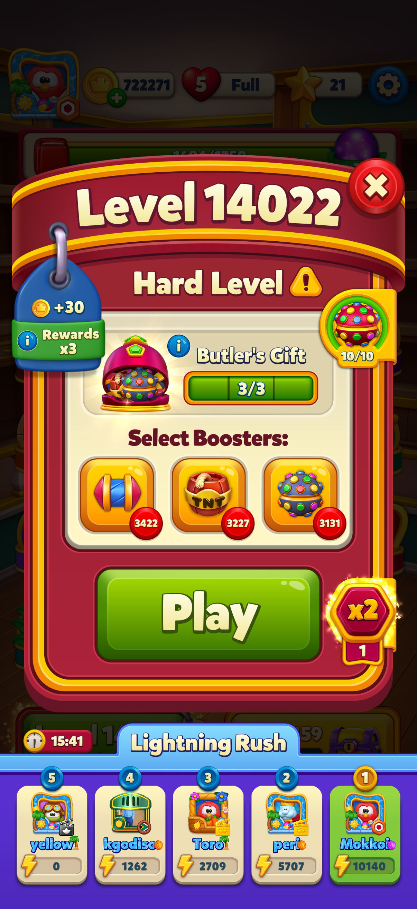
level14022（一の位2・報酬x3）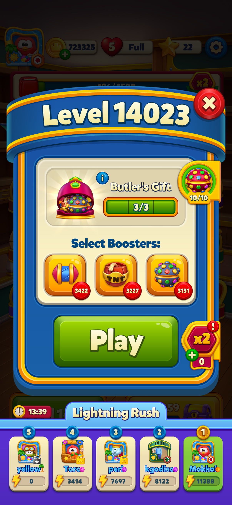
level14023（一の位3・報酬x1）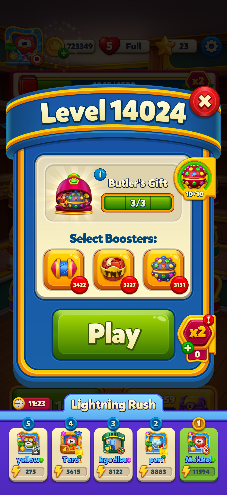
level14024（一の位4・報酬x1）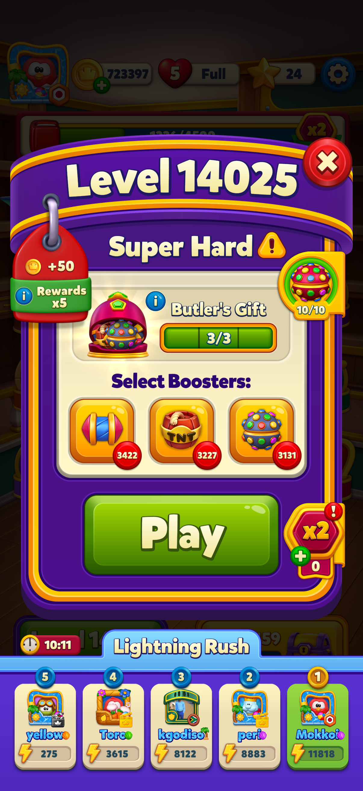
level14025（一の位5・報酬x5）④ 到達ボーナス元ネタ
メニュー内「到達ボーナス（自動確定分）」の数字の元になった、ステージ到達時に確定でもらえるアイテムのスクショ。クリックで原寸表示。
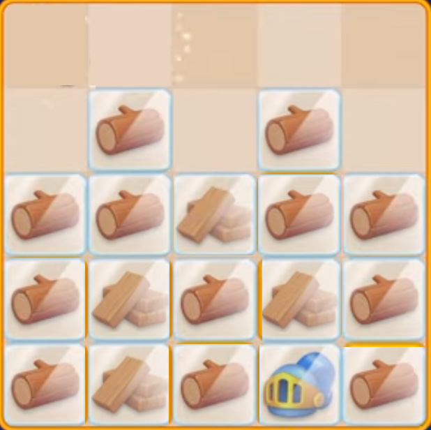
シングルソード到達丸太×12・板×4・兜×1
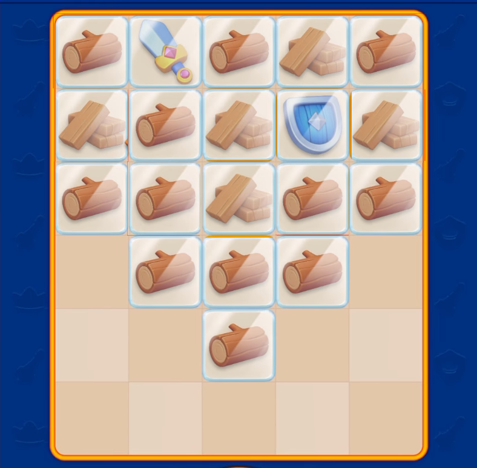
クロスソード到達丸太×12・板×5・シングルソード×1・青の盾×1
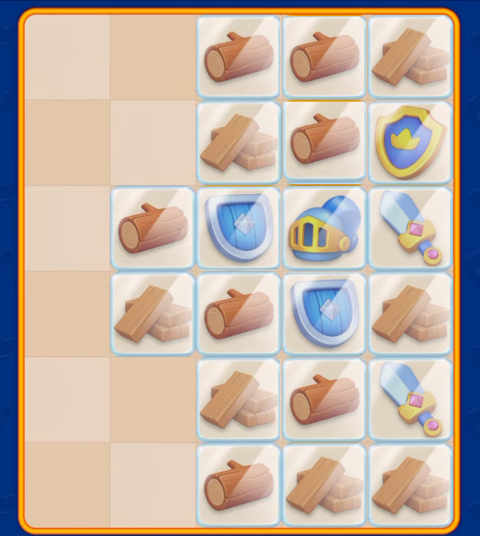
弓矢到達丸太×7・板×7・シングルソード×2・青の盾×2・兜×1・金の盾×1
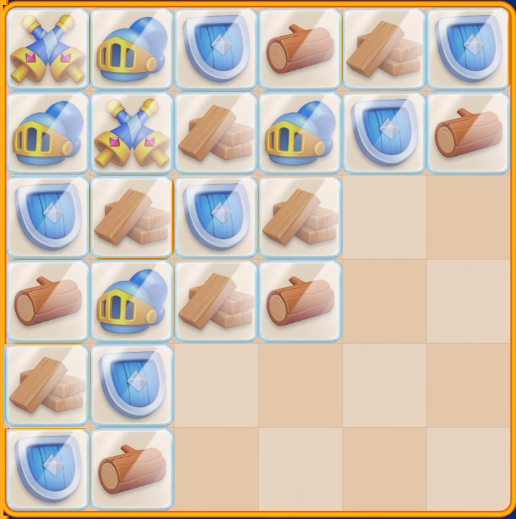
鎧到達青の盾×7・板×6・丸太×5・兜×4・クロスソード×2
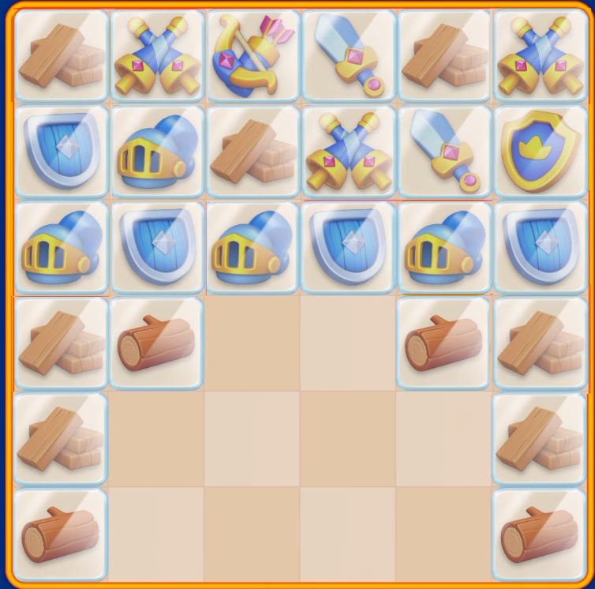
マント到達板×7・青の盾×4・兜×4・丸太×4・クロスソード×3・シングルソード×2・弓矢×1・金の盾×1
⚠️ 兜到達時点のボーナスはまだ未登録です。スクショがあれば追加できます。